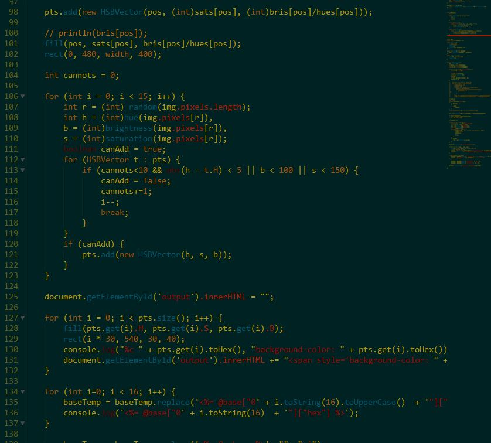

Select a file.
Look at some colors. w0w
This OneHourProject accepts an image input and returns a hexadecimal color scheme that will nicely match the image. It also returns the text of a *.tmTheme file, which is used for TextMate and Sublime color schemes. This means that you can use Klimt to generate syntax highlighting that matches a famous piece of art. It is so named because of the consistent but diverse color palette of the eponymous symbolist artist, Gustav Klimt.
You can plug the resultant color scheme into a TextMate theme template for Sublime Text. (This is the result of a second OneHourProject that took the initial color-finding algorithm and applied it to the theme). This code does not do contrast-checking, so you may wind up with an unusable color scheme (at least until the next iteration)!
The color scheme for this text was taken from a Klimt portrait of Adele Bloch. The fuchsia background was taken from an interesting picture of a matchbox I found on the internet somewhere.
Below is a demo of a color scheme generated using this software.
I use Processing.js to find the 'primary color' of the image, using an algorithm something like this:
for every pixel in the image: for every hue in 0..359: add +1 to the association of that hue. find the saturation of the most common hue by finding the average saturation of all of the pixels with that hue value, or within a certain range on either side. ------------------------------------------------------------ Next, pick a pixel at random. If a similar hue has not been found yet, add this to the list of interesting colors. Otherwise, pick a different pixel.
There are clearly better ways of finding interesting or important colors, but my hour was running low and my other method was returning things that were too unique; this effect could be mitigated by averaging a few pixels when sampling the image.
If the software has a hard time finding a prevailing hue, or if the hue is (practically) white, it may return a bright red color. This means that your image choice was poor. Shame on you.
Noisy images (with pixelation artifacts) may give strange results. (This too could be mitigated by averaging more points).